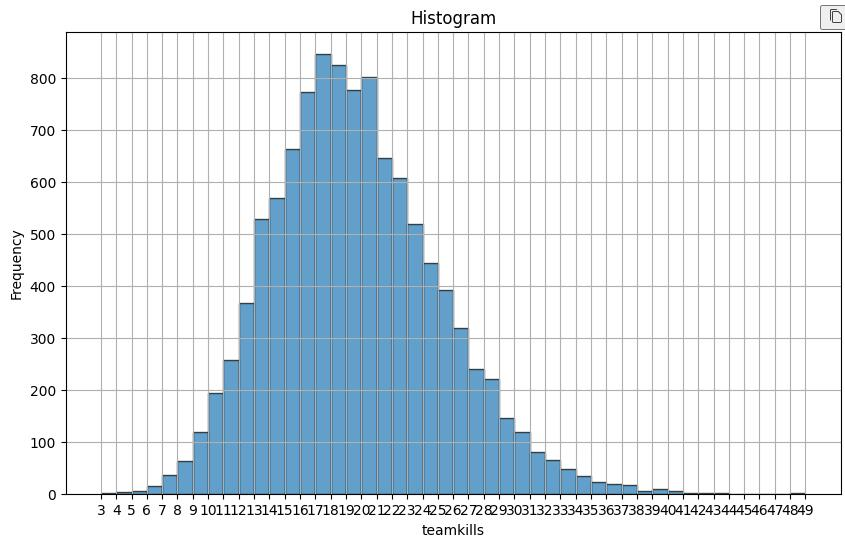
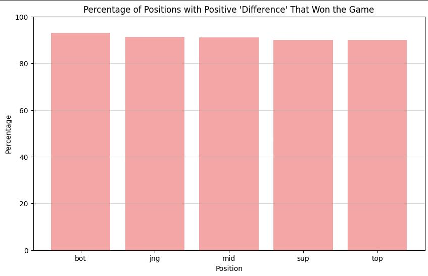
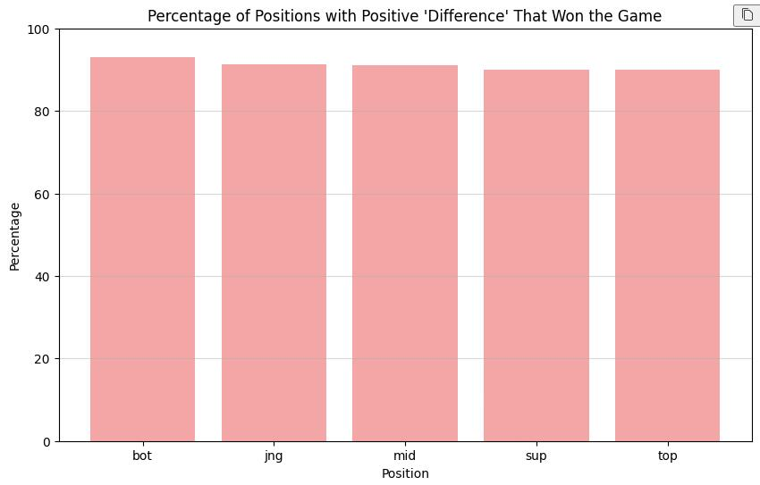
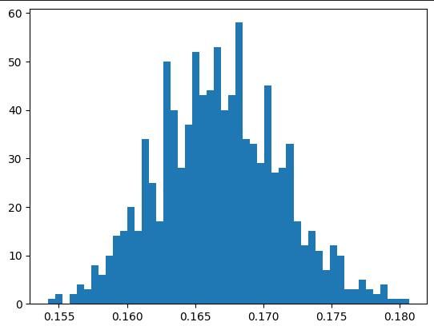
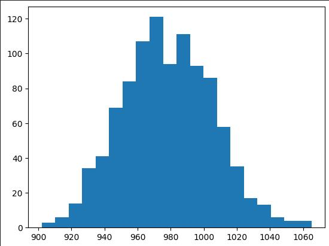

This is a project for DSC80 where we clean and perform exploratory data analysis, assess missingness, and conduct permutation tests. This website stands as a report of our findings.
Name(s): Ruhua Pan
It all started when the current ADC player of team SK Telecomm T1, Gumayusi, once made an analogy about matches and ramen:
"ADC is the egg and you don't really need it. But if they are the same ramen, the one with an egg is better. Support is like the bag of dehydrated vegetable. If it is a battle between two cups of the same ramen, that is when the egg matters."
It's a super interesting saying, hence I want to test if this saying actually makes sense. Which is, does the performance of ADCs make less impact on the result of the game?
My dataset includes all professional League of Legends games that have taken place in 2023, as the patches are important in deciding the outcomes of a game. I've kept columns gameid, league, position, playername, result, kills, deaths, assists, teamkills, teamdeaths, damagetochampions, visionscore, earnedgold. Because we are focusing on the 'outperformance' of a player, the first few columns are used to determine whom a player is competeting with (a bot lane shall be competeing with the other bot lane player, not a support), and the later columns are used to calculate the performance of a player.
Descriptions of Columns:
Gameid: a string of characters describing the id of a unique game
League: a String describing what league the game takes place.
Position: a String describing what position the player plays (or if the line's a team).
Playername: The name (not the in-game id) of the player. Would be Blank if the line's describing a team.
Result: 0 if the team or player loses and 1 if the player or team wins.
Kills: an int stating the total kills a player/team got.
Deaths: an int stating the total deaths a player/team got.
Assists: an int stating the total assists a player/team got.
Teamkills: total kills of the player's team.
Teamdeaths: total deaths of the player's team.
Damagetochampions: total damage to champions a player has done in game.
Visionscore: the vision score a player receives after game.
Earnedgold: total gold a player has earned in game.
Firstly, We kept the columns that I need: gameid, league, position, playername, result, kills, deaths, assists, teamkills, teamdeaths, damagetochampions, visionscore, earnedgold. We then make two seperate dataframes, one contains team data only and one contains soly player data, for some analysis.
I kept the result in a 0/1 fashion as it's no harder to use than the boolean true/false. We get two dataframes after that: teamdata and playerdata. For my own fun, I made another dataframe called t1matches, containing only matches from tier one professional leagues.
I checked through the data and did not found any unrelevent data that shall be transmuted to NaNs.
Here is the head of teamdata
| gameid | league | position | playername | result | kills | deaths | assists | teamkils | teamdeaths | dtc | visionscore | earnedgold | |
| 10 | ESPORTSTMNT06_2753012 | LFL2 | team | NaN | 1 | 13 | 7 | 38 | 13 | 7 | 95203 | 312 | 44787 |
| 11 | ESPORTSTMNT06_2753012 | LFL2 | team | NaN | 0 | 7 | 13 | 18 | 7 | 13 | 85333 | 304 | 34725 |
| 22 | ESPORTSTMNT06_2754023 | LFL2 | team | NaN | 0 | 20 | 16 | 44 | 20 | 16 | 106526 | 298 | 54402 |
| 23 | ESPORTSTMNT06_2754023 | LFL2 | team | NaN | 1 | 16 | 20 | 28 | 16 | 20 | 80368 | 330 | 51224 |
| 34 | ESPORTSTMNT06_2755035 | LFL2 | team | NaN | 1 | 20 | 7 | 48 | 20 | 7 | 64962 | 292 | 39364 |
Here is the head of playerdata
| gameid | league | position | playername | result | kills | deaths | assists | teamkils | teamdeaths | dtc | visionscore | earnedgold | |
| 0 | ESPORTSTMNT06_2753012 | LFL2 | top | Wylenz | 1 | 4 | 0 | 6 | 13 | 7 | 14283 | 49 | 13251 |
| 1 | ESPORTSTMNT06_2753012 | LFL2 | jng | Julbu | 1 | 2 | 2 | 4 | 13 | 7 | 6219 | 61 | 6478 |
| 2 | ESPORTSTMNT06_2753012 | LFL2 | mid | Sintax | 1 | 2 | 2 | 11 | 13 | 7 | 27028 | 49 | 10118 |
| 3 | ESPORTSTMNT06_2753012 | LFL2 | bot | Axelent | 1 | 5 | 1 | 7 | 13 | 7 | 42005 | 47 | 11728 |
| 4 | ESPORTSTMNT06_2753012 | LFL2 | sup | Wixo | 1 | 0 | 2 | 10 | 13 | 7 | 5668 | 106 | 3212 |
And t1matches would look very similar to them, except for the fact that they have both the player and the team data, just focuses only on tier-one professional leagues.
This is a histogram plotting the density of a professional team's team kills.
Since we've noticed that this histogram has two peaks (one around 5-7, one around 16-18), we supposed the result of the two-peak histogram might be a result from it being a overlap between two normal distributions, one with winning teams and one with losing teams. Therefore, we plotted the histogram on the winning teams only.
And we get two curves with a single peak. One curve peaks around 5-7, and one other curve peaks around 16-18, just as what we expected. We can concluded that if a team losts, the team is likely to receive 3-15 kills, with them most likely receiving 6 kills (the mode), and if a team wins, they are likely to receive 12-27 kills, with them most likely to receive 17 kills (the mode).
Here comes the difference between each position on field. Because we obviously cannot expect a support doing as much damage as a mid-laner do, We'll judge the a player's performance based on a score calculated by (K + A) / (D + 1) (to prevent dividing by 0).
After the performance is calculated, we calculate the relationship between 'outperformance' in each lane and the actual winning stat. That is, for each position outperforming their opponent, which position's outperformance brings the most direct chance of winning?
Apart from that, I'll do the same with a new difference system, calculated by (damagetochampions + goldearned) * visionscore. I'll use that as the new score system and still calculate the same thing as above - for each position outperforming their opponent, which position's outperformance brings the most direct chance of winning?
Analysis
From both bar charts, we can tell that an outperformance in the bottom lane (ADC position) is the most likely to bring success to the team.
Interesting Aggregates
The groupby() function used on positions allows us to see what position's players outperformance is more closely related with the overall winning. We can tell that in all cases of a player outperforming the opponent, the case when that player's an ADC brings the most actual winnings.
Note that there's no need to calculate a percentage here, because one game takes 5 players to play, therefore the #of games of all positions shall be equal.
The missingness of 'playername' does depend on position, because teams apparently don't have a player id, and the data is determined by the player's playername in battle.
We suppose that the position being a 'team' relates with the missingness of 'playername'. The observed statistics is a shockingly 100%.
We then do the re-permutation for 100 times and then see how many percent of 'playername' is missing that corresponds to a permutated 'position' with the value 'team'. Here's the outcome:
Our observed statistic, 1.00, clearly has a p-value of 0.00.
Therefore, we conclude that the 'playername' column is NMAR.
Here We test out the hypothesis raised by Gumayusi, that a huge difference in ADC does not contribute greatly to the win of the whole team.
To firstly solve the problem, we have to paraphrase what he was saying. Relating to the background that he's saying it, the sentence roughly translates to 'ADCs alone cannot save the game'.
Therefore, we count the "Overall Count of Players Who Lost But Still Have Positive 'Difference' by Position", which shows the number of times one player outperformed their opponent but still failed to save the game (to win).
However, when we look at the graph, an awkward fact is that we can see that the bottom lane actually has the fewest stats.Therefore, we would reverse our topic a bit - to see if the obvious smaller value in ADCs saving the world makes statistical sense.
H0:If the event of a player outperforming their opponent but still losing the game happens, the player is equal likely or more likely to be an ADC.
H1:If the event of a player outperforming their opponent but still losing the game happens, the player is less likely to be an ADC.
Steps:
We do this by carrying out a permutation test on the position value of the playerdata dataset for 1000 times, then record the times that ADCs saving the world.
We choose the standard significance level alpha = 5% or 0.05.
Result:
After doing 1000 simulations, here's what we get. We can see that the observed statistic, 770, has a p-value of 0.0 in this case. With a significance value of 0.001, we reject the null hypothesis. Thus we conclude that, the probably of an ADC specifically outperforming their opponent but losing the game is smaller than the average player data. Which can be paraphrased to, if the event of some player outperforming their opponent but losing the game happens, that player is less likely to be an ADC.
While the analysis is done, I don't mean to use this analysis as a rebuttal to Gumayusi's words.
As what we all know-correlation doesn't equal causation, a very probable guess can be that, a great performance of ADCs in team do require good performance of other lanes, as ADCs are super fragile. Therefore, if a team's overall not doing well, the ADC is less likely to have a good performance even though the player might be trying their best.
To analyze this more thoroughly, I'll do something like taking the overall gold stat into account, which would probably require a deeper comprehension of the game.
I don't play the game myself nor do I watch matches, so that task might be currently beyond my ability a bit, but maybe I'll be able to test it out in the future.
Thanks for watching :3